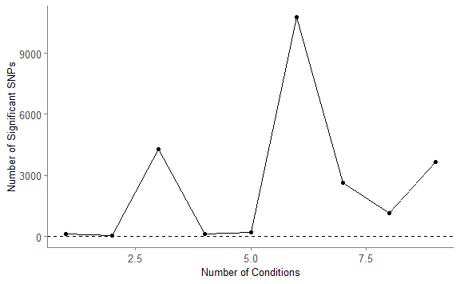
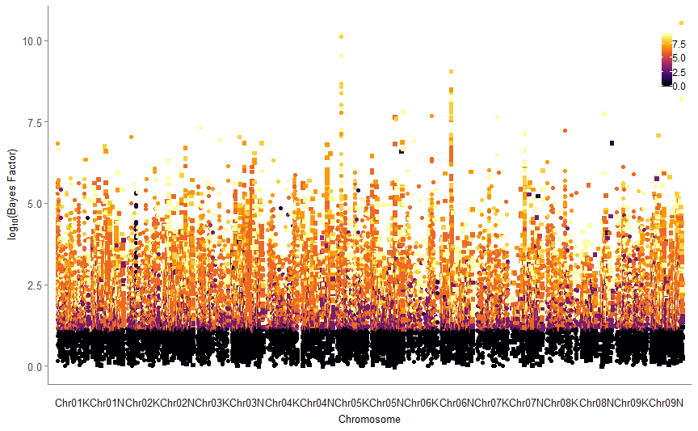
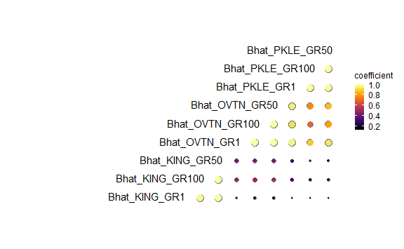
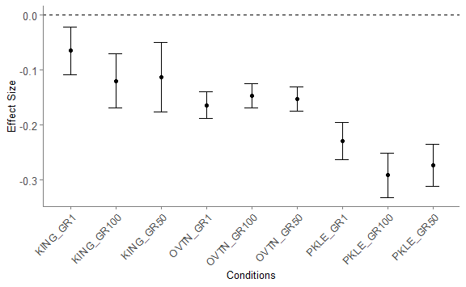

The goal of switchgrassGWAS is to allow fast, powerful genome-wide association analysis on the Panicum virgatum diversity panel.
The switchgrass (Panicum virgatum) diversity panel is now being grown at many locations across the United States and Mexico. Many researchers are measuring phenotypes on this panel to understand the genes and genetic regions affecting these phenotypes. This package provides the code for fast, less memory intensive genome-wide association (GWAS) using bigsnpr. It also provides functions to link diversity panel phenotypic data with SNP data, to prepare basic plots in ggplot for further customization, and to prepare multiple GWAS results for use in the downstream application mash.
Installation
You can install the development version from GitHub with:
if (!requireNamespace("BiocManager", quietly = TRUE))
install.packages("BiocManager")
BiocManager::install("multtest")
if (!requireNamespace("devtools", quietly = TRUE))
install.packages("devtools")
devtools::install_github("privefl/bigsnpr")
devtools::install_github("stephens999/ashr")
devtools::install_github("Alice-MacQueen/switchgrassGWAS")This will give you access to the code, example phenotypes, and the currently available information about the genotypes in the switchgrass diversity panel.
Installations for additional functionality
To use some of the optional functions in this package, you will need to install some additional packages, either from Bioconductor or from Github. The Bioconductor packages are needed to create dataframes containing annotation information.
if (!requireNamespace("BiocManager", quietly = TRUE))
install.packages("BiocManager")
BiocManager::install(c("multtest", "GenomicFeatures", "GenomicRanges",
"IRanges", "VariantAnnotation", "AnnotationDbi"))mashr is needed only if you want to use the mash_standard_run function. It is not needed for any of the downstream plotting functions. NB: mashr can only be installed on Linux or Mac operating systems. It cannot be installed on Windows systems.
install.packages("devtools")
devtools::install_github("stephenslab/mashr@v0.2-11")Some plotting functions also use the dots package, which allows you to specify more plotting arguments specific to each function.
devtools::install_github("lcolladotor/dots")Obtaining the Genomic Information
As of this writing, not all of the genomic information is publicly available. If you would like access to this information pre-publication, please contact Tom Juenger at tjuenger AT utexas DOT edu.
To use this package prior to publication of the switchgrass genomic data, you’ll need to request access to the genomic information, then download this information and put it in your working directory. Then, you can load the information into your R environment using the following commands:
library(bigsnpr)
library(AnnotationDbi)
snp <- snp_attach("Pvirgatum_4x_784g_imp_phased_maf0.02_QC.rds")
load("svd0.rda")
txdb <- loadDb(file = "Pvirgatum_516_v5.1.gene.txdb.sqlite")Genome-Wide Association
You can use pvdiv_gwas to run linear or logistic univariate regression on 21 million SNPs with a minor allele frequency of 2% or higher. The following example demonstrates running a genome-wide association on a continuous trait via linear regression. The trait is tiller count at the end of the 2018 season in Brookings, South Dakota.
NCORES <- nb_cores()
data(phenotypes)
one_phenotype <- phenotypes %>%
dplyr::select(PLANT_ID, BRKG_TC_EOS_2018)
gwas <- pvdiv_gwas(df = one_phenotype, type = "linear",
snp = snp, covar = svd0, ncores = NCORES)You can then plot the results of this GWAS using built in functions in bigsnpr.
Note that while the GWAS will run quickly, the plotting functions take about ten times as long to run, because of the large number of datapoints to plot (>21 million).
snp_manhattan(gwas, infos.chr = CHRN$CHRN, infos.pos = POS)
snp_qq(gwas)Annotations for Top Associations
You can also use pvdiv_table_topsnps to create dataframes containing annotation information. To do this, first load the provided annotation information. Currently, this is version 5.1 of the annotation information for Panicum virgatum.
If you have saved the genomic files you requested access to in your working directory, you would then run the following commands to load the annotation data:
library(AnnotationDbi)
library(VariantAnnotation)
load("markers.rda")
txdb <- loadDb(file = "Pvirgatum_516_v5.1.gene.txdb.sqlite")
anno_info <- read_delim(file = "Pvirgatum_516_v5.1.annotation_info.txt",
col_names = TRUE, delim = "\t")
gene_anno_info <- tbl_df(anno_info) %>%
distinct(locusName, .keep_all = TRUE)You can select a number of top SNPs to find annotation information for, a FDR threshold to find annotation information for, and any distance away from the associated SNP (in bp) for which to pull annotations. Here, we find genes 10kb and 100kb away from the top 50 associations and for associations above a FDR of 5%.
anno_tables <- pvdiv_table_topsnps(df = gwas, type = "bigsnp", n = 50,
FDRalpha = 0.05, rangevector = c(10000, 100000),
markers = markers, anno_info = gene_anno_info,
txdb = txdb)
saveRDS(anno_tables, "Annotation_tables_BRKG_TC_EOS_2018.rds")This function will return a list of all of the tables you requested, named according to the criteria used to create the table. You can then save these tables individually as csv or any other type of file.
If the resultant tables are small, say, less than 2000 entries apiece, we favor saving these tables as individual sheets in an Excel file using the R package XLConnect.
Analysis of multiple phenotypes or planting locations
Many researchers are measuring phenotypes on the Panicum virgatum diversity panel to understand the genes and genetic regions affecting these phenotypes. When similar phenotypes are collected at many locations, researchers may be interested in the extent to which effects of SNPs are similar or different across these different locations. The R package mashr can be used to conduct this kind of analysis, and downstream plotting functions in switchgrassGWAS can be used to further visualize and interpret the results of this analysis.
After you run your GWAS using bigsnpr, there are three steps to running a mash analysis. First, you must convert the bigsnpr results to mashr input format. Second, you run the mash analysis. Third, you can visualize the mash results using mashr functions or using functions from switchgrassGWAS.
1. Run pvdiv_bigsnp2mashr function
The first three commands are setup for running the pvdiv_bigsnp2mashr function.
You want a character vector containing the names of the rds files containing your GWAS results - you can find that with list.files() or with pvdiv_results_in_folder(). The path should be the location of the gwas files, and can be a relative or absolute path. The pattern to match can be anything, but defaults to “*.rds”. Here I have used regular expressions to find four files to demonstrate mashr on.
Second, you what a character vector the same length as the one containing your GWAS rds files. This contains strings of whatever you want your phenotypic column names to ultimately be. If you’ve put the phenotype name into the GWAS rds file name (which I’d certainly recommend!), you can find this with a str_sub() command.
Third, you want to calculate the number of SNPs with low p-values to select from each GWAS. Ideally mash will have from 1-2M cells for reasonable run times. You can divide 2 million by the square of the number of phenotypes you have to get a reasonable starting point for this value. Depending on your computing power and the amount of overlap of low p-value SNPs between your GWAS, you may need to tweak this number further.
Finally, you run the pvdiv_bigsnp2mashr() function using these quantities. Choose the model type that you ran on your GWAS. Current options are “logistic” or “linear”. Mixing these types is not supported (and statistically is probably a bad idea, also.) Also choose whether you want to save the output to a file in your path - recommended, though the default is FALSE, so the user needs to ‘opt in’ to this.
data(phenotypes)
gwas <- pvdiv_gwas(df = phenotypes, type = "linear",
snp = snp, covar = svd0, ncores = NCORES)
load("markers.rda")
load("markers2.rda")
snp <- snp_attach("Pvirgatum_4x_784g_imp_phased_maf0.02_QC.rds")
G <- snp$genotypes
gwas_rds <- pvdiv_results_in_folder(path = ".", pattern = "GWAS_object_")
phenotype_names <- str_sub(gwas_rds, start = 13, end = -5)
numSNPs <- ceiling(1500000/length(phenotype_names)^2)
mash_input <- bigsnp2mashr(path = ".", gwas_rds = gwas_rds,
phenotypes = phenotype_names, numSNPs = numSNPs,
markers = markers, markers2 = markers2, G = G,
model = "linear", saveoutput = TRUE)2. Run a standard mash analysis
Here, the input is the list object you obtained from bigsnp2mashr() in the previous step. Again, you can choose to save the output to a file in your path. You can optionally specify numSNPs, or if you are running this in a session where you don’t have the output from bigsnp2mashr() in your environment, you can specify numSNPs equivalent to your bigsnp2mashr() run and this function will find the rds files it saved (on that path, with that number of SNPs) for you.
mash_output <- mash_standard_run(path = ".", list_input = mash_input,
numSNPs = numSNPs, saveoutput = TRUE)
# Or, if you are doing this in a new session and don't have mash_input
# in your workspace, you just need to enter the number of SNPs and this
# function will find a previously saved rds file with that numSNPs for you:
# mash_output <- mash_standard_run(path = ".", numSNPs = numSNPs,
# saveoutput = TRUE)3. Visualize mash output
You have a lot of options here, and some great ones (most importantly, mash_plot_meta) are already included in the mashr package.
However, this package adds a few additional options for viewing mash outputs.
3a. Number of Significant SNPs per Number of Conditions
This plot can help answer questions like, “at how many planting sites do SNPs affect this phenotype?”
nbycond <- mash_plot_sig_by_condition(m = mash_output)
nbycond$ggobject
3b. Manhattan-esque plot (“Mashhattan”)
This plot can help answer questions like, “What is the genomic distribution of SNPs with significant effects, and at how many planting sites do these SNPs affect the phenotype?”
mashhattan <- mash_plot_manhattan_by_condition(m = mash_output)
#> Joining, by = "value"
mashhattan$ggmanobject
3c. Pairwise sharing of similar effects
This plot can help answer questions like, “How many SNPs have similar effects at pairs of planting sites?”. As most analyses of GxE typically only consider interactions between pairs of sites, this plot is a useful extension of two-site models.
If you saved the output of a mash_standard_run(), then you have saved two get_pairwise_sharing() outputs as rds objects already. All you need to do then is tell this function 1) the path to the RDS, for effectRDS; or 2) the correlation matrix you’re using if it’s an object in your environment, for corrmatrix.
pairwise_plot <- mash_plot_pairwise_sharing(effectRDS = "data-raw/Pairwise_sharing_Strong_Effects_5000SNPs.rds",
reorder = TRUE)
#> Loading required namespace: dots
#> Scale for 'colour' is already present. Adding another scale for
#> 'colour', which will replace the existing scale.
pairwise_plot$gg_corr
3d. Look at mash effect plots
This plot can help answer questions like, “What are the effects of a single SNP on the phenotype across planting sites?”
This will return ggplot objects for the effect plots for the nth significant SNP, ranked by the most significant local false sign rate. You can find the names of the top ten effects, for example, using get_significant_results(m = mashoutput)[1:10].
Alternatively, if you have the row number of the SNP you want to plot (which you can find with get_marker_df()), you can put that in as i.
effects <- mash_plot_effects(m = mash_output, n = 1)
effects$ggobject +
scale_x_discrete(labels = str_sub(as_vector(effects$effect_df$value),
start = 6)) +
theme(axis.text.x = element_text(angle = 45, hjust = 1))
#> Scale for 'x' is already present. Adding another scale for 'x', which
#> will replace the existing scale.
3e. Visualizing GxE
The get_GxE function is still a little buggy for switchgrass. To be completed.
GxE_df <- get_GxE(m = mash_output)
mash_plot_pairwise_sharing(corrmatrix = GxE_df$S_AP, reorder = FALSE,
saveoutput = TRUE)
mash_plot_pairwise_sharing(corrmatrix = GxE_df$S_DS, reorder = FALSE,
saveoutput = TRUE)
mash_plot_pairwise_sharing(corrmatrix = GxE_df$S_2_no, reorder = FALSE,
saveoutput = TRUE)